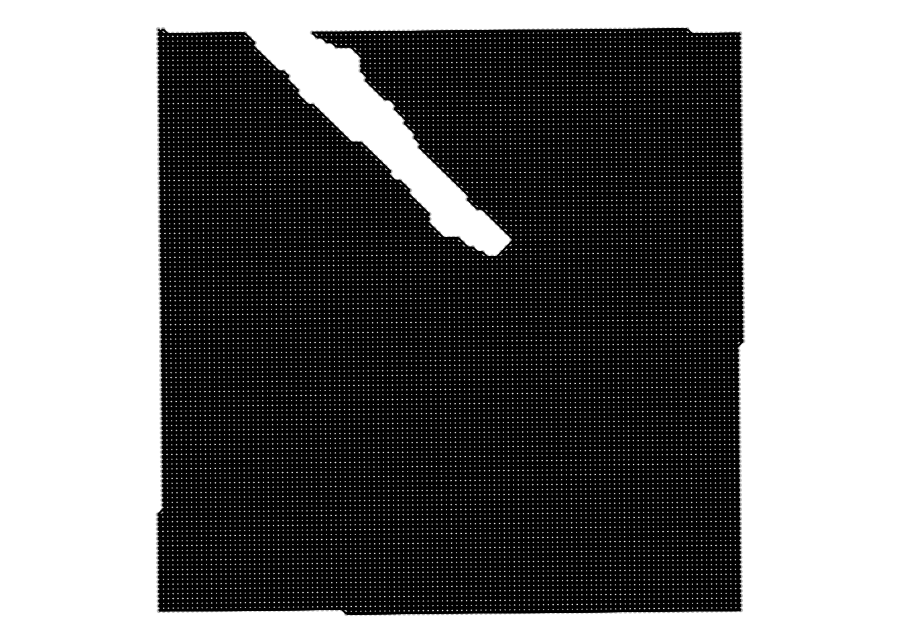
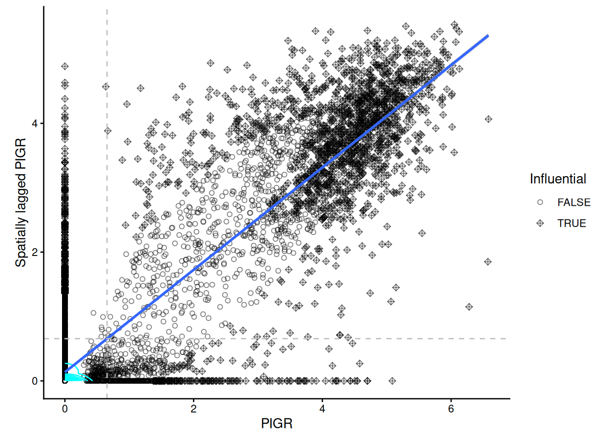

Exercise 1
Learning objectives
- Learn the basic principles of exploratory spatial statistics
- Compute and visualise local and global measures of spatial autocorrelation
- Compare spatial statistics measures across samples using linear mixed models
- This chapter is based on the
OSTAonline book chapter on spatial statistics and uses heavily theVoyagerspatial statistics library (Moses et al. 2023)
Libraries
Load data
# Load the SpatialExperiment objectq
spe <- loadHDF5SummarizedExperiment(dir="results/day1", prefix="01.1_spe")In order to use the big spatial statistics library sf we convert the SpatialExperiment object into a SpatialFeatureExperiment object (Moses et al. 2025). In addition to the SpatialExperiment object it contains simple feature categories such as Geometries and Graphs. In this 10x Visium Dataset the Geometries stored are the coordinates of the spots
sfe <- toSpatialFeatureExperiment(spe)
sfeclass: SpatialFeatureExperiment
dim: 18085 14207
metadata(2): resources spatialList
assays(1): counts
rownames(18085): SAMD11 NOC2L ... MT-ND6 MT-CYB
rowData names(3): ID Symbol Type
colnames(14207): s_016um_00144_00175-1 s_016um_00204_00145-1 ...
s_016um_00193_00227-1 s_016um_00109_00223-1
colData names(6): barcode in_tissue ... bin_size sample_id
reducedDimNames(0):
mainExpName: Gene Expression
altExpNames(0):
spatialCoords names(2) : pxl_col_in_fullres pxl_row_in_fullres
imgData names(4): sample_id image_id data scaleFactor
unit:
Geometries:
colGeometries: centroids (POINT)
Graphs:
sample01: Data modalities of spatial statistics
In spatial transcriptomics we differentiate between imaging-based and sequencing-based technologies which give rise to very different data modalities (Rao et al. 2021).

Our dataset was acquired using 10x Visium HD. The data modality of this technology is best described by a regular lattice. This means that the observations are taken at regularly spaced intervals. This is very different to imaging-based approaches where observations are due to a stochastic data generating process, which is related to some underlying biological mechanism.
With spots of 2um^2, Visium HD can provide subcellular resolution. We can segment cells from this regular lattice of pixels and approximate the cells by their centroid. This in turn can be described as an irregular lattice of the cell types in space or even be analysed as a point process of the cell centroid locations.
In what follows we will focus on analysing the regular lattice of the pixel measurements with techniques from lattice data analysis.
Preprocessing and neighbourhood defintion
We note that the counts in our SpatialFeatureExperiment object are still raw counts therefore we will log normalise them with scuttle::logNormCounts()
# identify mitochondrial genes
gn <- rowData(sfe)$Symbol
mt <- grepl("^MT-", gn, ignore.case = TRUE)
table(mt)mt
FALSE TRUE
18074 11 # remove them
sfe <- sfe[!mt, ]
#log-normalise the counts
sfe <- scuttle::logNormCounts(sfe)
sfeclass: SpatialFeatureExperiment
dim: 18074 14207
metadata(2): resources spatialList
assays(2): counts logcounts
rownames(18074): SAMD11 NOC2L ... EIF1AY DAZ2
rowData names(3): ID Symbol Type
colnames(14207): s_016um_00144_00175-1 s_016um_00204_00145-1 ...
s_016um_00193_00227-1 s_016um_00109_00223-1
colData names(7): barcode in_tissue ... sample_id sizeFactor
reducedDimNames(0):
mainExpName: Gene Expression
altExpNames(0):
spatialCoords names(2) : pxl_col_in_fullres pxl_row_in_fullres
imgData names(4): sample_id image_id data scaleFactor
unit:
Geometries:
colGeometries: centroids (POINT)
Graphs:
sample01: Now, we notice a logcounts assay in our object.
Next, we will define a neighbourhood on which we want to compute spatial statistics metrics. In 10x Visium it is very natural to consider the direct neigbours of hexagonal visium lattice. We do this with the function Voyager::findVisiumGraph().
colGraph(sfe, "visium") <- findVisiumGraph(sfe)
colGraph(sfe, "binary") <- findVisiumGraph(sfe, style = "B")
plotColGraph(sfe,
colGraphName = "visium"
) + theme_void()
We notice two things:
The \(y\)-coordinate is flipped compared to the image. This is due to the way that visium data is acquired. The Visium slide is placed on top of the tissue but the H&E image is acquired from below the tissue.
On top of the spots we know see the hexagonal neighbourhood on top of the regular lattice.
Univariate Analysis
Global indicators of spatial association
Now that we have defined both the neighbourhood of a spot and preprocessed the gene expression, we can turn to measures of spatial association.
In general, in a global association metric we compute for each point \(i\) a metric for its neighbourhood \(j\). The neighbourhood we quantified before as the regular hexagonal grid and is passed to the functions as a weight matrix \(w_{ij}\). The association measure is then a function \(f(x_i,x_j)\) and could e.g. quantify spatial correlation
\[ \sum_i \sum_j f(x_i,x_j) w_{ij} \]
A very famous measure of global spatial autocorrelation is called Moran’s \(I\). It assess correlation of a gene with itself given a defined weight matrix \(w\) (Moran 1950).
- Model the variance of the log-transformed expression profiles per gene with
scran::modelGeneVar()(using the argumentsubset.rowwill make the fitting faster) - Extract the top 200 highly variable genes in this dataset with
scran::getTopHVGs() - Calculate the global Moran’s \(I\) coefficient with the function
Voyager::runUnivariate()on these 200 highly variable genes. You can find information and examples on how to run this function by typing?runUnivariatein your console - Extract the top 3 genes with the highest Moran’s \(I\) value
- Plot the expression of these three genes in space using
Voyager::plotSpatialFeature
First, we model the variance on a subset of the genes for computational reasons Then, we extract the 200 most highly variable genes
stats <- scran::modelGeneVar(sfe, subset.row = 1:2000)
hvg <- scran::getTopHVGs(stats, n = 200)Next, we calculate global Moran’s I for these 200 genes
sfe <- runUnivariate(sfe,
type="moran",
features=hvg,
colGraphName="visium")We order them and plot the gene expression top 3 genes wiht the plotSpatialFeature function from the Voyager package.
I <- rowData(sfe)$moran_sample01
o <- order(I, decreasing=TRUE)
topGenes <- rownames(sfe)[head(o, 3)]
plotSpatialFeature(sfe, topGenes, ncol=3)
Local indicators of spatial association
In the section above, we have computed a global measure of spatial association, meaning that we get one number per field-of-view. This is an average of the local contributions and neglects the potential underlying heterogeneity completely.
Therefore, we will investigate local indicators of spatial association (Anselin 1995).
In the case of Moran’s \(I\) we will now not calculate one measure for the entire field-of-view but rather one metric per location/spot \(i\): \(I_i\).
Calculate local Moran’s \(I\) for the top three global Moran’s \(I\) genes from above using the function
Voyager::runUnivariate()Plot the local Moran’s \(I\) values in space using
Voyager::plotLocalResult
First, we have to calculate the metric on the first most autocorrelated genes.
sfe <- runUnivariate(sfe,
features = topGenes,
colGraphName = "visium",
type = "localmoran")Then, we plot the local Moran’s \(I\) values in space.
plotLocalResult(sfe, "localmoran",
features =topGenes, ncol = 3,
colGeometryName = "centroids",
divergent = TRUE, diverge_center = 0)
Discretising regions with Moran’s scatterplot
The continuous local Moran’s \(I_i\) measurements can be difficult to interpret. A simplification is Moran’s scatter plot (Anselin 2019). The idea is to compare the Moran’s \(I\) of the spot \(i\) itself with its neighbours \(j\). Like this we obtain four options: high \(I_i\) next to neighbours that have high \(I_j\), high \(I_i\) next to neighbours that have low \(I_j\) etc. This separates outliers (high-low and low-high) from values within more homogeneous regions (high-high and low-low).
Calculate Moran’s scatterplot with
runUnivariateon the top three global Moran’s \(I\) genes from abovePlot the Moran’s scatterplot results in space using
Voyager::plotLocalResult
First, we have to calculate the metric on the first three most variable hvgs.
sfe <- runUnivariate(
sfe,
features = topGenes,
colGraphName = "visium",
type = "moran.plot"
)We will show the Moran’s scatter plot for the gene PIGR.
# we will show one Moran's scatterplot
moranPlot(sfe, topGenes[1], graphName = "visium", swap_rownames = "symbol") + theme_classic()
The grey dashed lines indicate the mean expreession of the “PIGR” expression in the spots themselves and among their neighbours. According to to these means the spots are categorised into 4 categories, which can be plotted back in space. We notice that there is quite a large fraction of regions that constitute as “high-high” for all the genes in the same region.
plotLocalResult(
sfe,
name = "localmoran",
features = topGenes,
attribute = "mean",
colGeometryName = "centroids"
)
Multivariate Analysis
All of the analyses we showed above, were univariate comparison. Moran’s \(I\) and other association measures have also bivariate and even multivariate variants.
- Which type of biological question do you think would be nicely addessed with e.g. a bivariate spatial association measure?
One potentially interesting set of questions one could answer with bivariate spatial association measures are ligand-receptor interactions.
- Calculate a bivariate Moran’s \(I\) for the genes
PIGRandCLCA1using the functionVoyager::runBivariate()
sfe <- runBivariate(sfe, type = "localmoran_bv",
feature1 = "PIGR", feature2 = "CLCA1",
colGraphName = "visium",
nsim = 499)plotLocalResult(sfe, "localmoran_bv",
features = localResultFeatures(sfe, "localmoran_bv"),
ncol = 2, divergent = TRUE, diverge_center = 0,
colGeometryName = "centroids") 
We notice that there is one region showing high bivariate Moran’s I. This is also the region where both univariate Moran’s I scatterplot values were “high-high”. The regions which were classified “high-high” individually for each gene do not show up here.
Bonus: Multi-sample Analysis
This chapter so far showed how to perform lattice-data analysis for one sample. Lattice data analysis is not yet very common in multi-sample analyses.
One option is to compute a measure of global spatial association giving one numerical value per field-of-view.
First we will load 4 slides from the dataset (2 healthy slides and 2 cancerous slides).
Due to conversion issues, this code creates a SpatialFeatureExperiment via a SingleCellExperiment
speMult <- loadHDF5SummarizedExperiment(dir="data/", prefix="02.3_spe_tmp")
speMult$array_row <- speMult$row
speMult$array_col <- speMult$col
colData(speMult)$sample_id |> unique()[1] Normal_P5 Cancer_P5 Cancer_P1 Normal_P3
Levels: Cancer_P1 Cancer_P5 Normal_P3 Normal_P5sceMult <- as(speMult, "SingleCellExperiment")
colData(sceMult) <- colData(sceMult) |> cbind(spatialCoords(speMult))Next, we will convert the SingelCellExperiment to a SpatialFeatureExperiment.
sfeMult <- toSpatialFeatureExperiment(sceMult,
sample_id = "sample_id",
spatialCoordsNames = c("pxl_col_in_fullres", "pxl_row_in_fullres"),
loadImage = FALSE)
sfeMultclass: SpatialFeatureExperiment
dim: 18045 56120
metadata(0):
assays(1): counts
rownames(18045): SAMD11 NOC2L ... MT-ND6 MT-CYB
rowData names(3): ID Symbol Type
colnames(56120): s_016um_00145_00029-1.Normal_P5
s_016um_00165_00109-1.Normal_P5 ... s_016um_00122_00096-1.Normal_P3
s_016um_00127_00062-1.Normal_P3
colData names(7): row col ... array_row array_col
reducedDimNames(0):
mainExpName: NULL
altExpNames(0):
spatialCoords names(2) : pxl_col_in_fullres pxl_row_in_fullres
imgData names(0):
unit:
Geometries:
colGeometries: centroids (POINT)
Graphs:
Normal_P5:
Cancer_P5:
Cancer_P1:
Normal_P3: Preprocessing and neighbourhood defintion
We note that the counts in our SpatialFeatureExperiment object are still raw counts therefore we will log normalise them with scuttle::logNormCounts()
# identify mitochondrial genes
gn <- rowData(sfeMult)$Symbol
mt <- grepl("^MT-", gn, ignore.case = TRUE)
table(mt)mt
FALSE TRUE
18034 11 # remove them
sfeMult <- sfeMult[!mt, ]
#log-normalise the counts
sfeMult <- scuttle::logNormCounts(sfeMult)
sfeMultclass: SpatialFeatureExperiment
dim: 18034 56120
metadata(0):
assays(2): counts logcounts
rownames(18034): SAMD11 NOC2L ... KDM5D EIF1AY
rowData names(3): ID Symbol Type
colnames(56120): s_016um_00145_00029-1.Normal_P5
s_016um_00165_00109-1.Normal_P5 ... s_016um_00122_00096-1.Normal_P3
s_016um_00127_00062-1.Normal_P3
colData names(8): row col ... array_col sizeFactor
reducedDimNames(0):
mainExpName: NULL
altExpNames(0):
spatialCoords names(2) : pxl_col_in_fullres pxl_row_in_fullres
imgData names(1): sample_id
unit:
Geometries:
colGeometries: centroids (POINT)
Graphs:
Normal_P5:
Cancer_P5:
Cancer_P1:
Normal_P3: Now, we notice a logcounts assay in our object.
Next, we will define a neighbourhood on which we want to compute spatial statistics metrics. For computational reasons we will consider a \(k\) nearest neighbourhood around the cells.
allGraphs <- findSpatialNeighbors(sfeMult,
method = "knearneigh", # wraps the spdep function with the same name
k = 5,
zero.policy = TRUE,
sample_id = "all"
)
colGraphs(sfeMult, "knn5", sample_id = "all") <- allGraphsGiven you have now a
SpatialFeatureExperimentobject with four samples, how would you compare a global indicator of spatial association across conditions, possibly with multiple samples? As an example, calculate global univariate Moran’s \(I\) for the gene “PIGR”.an important flag in this question is
sample_id = "all". For reasons of having isolated cell patches, consider a \(k\)-NN neighbourhood this time instead offindVisiumGraph.
First, we need to calculate univariate Moran’s \(I\) for all samples
sfeMult <- runUnivariate(sfeMult,
features = "PIGR",
colGraphName = "knn5",
exprs_values = "logcounts",
sample_id = "all",
type = "moran.mc",
nsim = 200)res <- rowData(sfeMult)["PIGR",]
resDataFrame with 1 row and 27 columns
ID Symbol Type moran.mc_statistic_Normal_P5
<character> <character> <factor> <numeric>
PIGR ENSG00000162896 PIGR Gene Expression 0.665933
moran.mc_parameter_Normal_P5 moran.mc_p.value_Normal_P5
<numeric> <numeric>
PIGR 201 0.00497512
moran.mc_alternative_Normal_P5 moran.mc_method_Normal_P5
<character> <character>
PIGR greater Monte-Carlo simulati..
moran.mc_res_Normal_P5 moran.mc_statistic_Cancer_P5
<list> <numeric>
PIGR 0.00364546,0.00024356,0.00120214,... 0.662601
moran.mc_parameter_Cancer_P5 moran.mc_p.value_Cancer_P5
<numeric> <numeric>
PIGR 201 0.00497512
moran.mc_alternative_Cancer_P5 moran.mc_method_Cancer_P5
<character> <character>
PIGR greater Monte-Carlo simulati..
moran.mc_res_Cancer_P5 moran.mc_statistic_Cancer_P1
<list> <numeric>
PIGR -0.00521515,-0.00276429, 0.01003306,... 0.839516
moran.mc_parameter_Cancer_P1 moran.mc_p.value_Cancer_P1
<numeric> <numeric>
PIGR 201 0.00497512
moran.mc_alternative_Cancer_P1 moran.mc_method_Cancer_P1
<character> <character>
PIGR greater Monte-Carlo simulati..
moran.mc_res_Cancer_P1 moran.mc_statistic_Normal_P3
<list> <numeric>
PIGR -0.00500185, 0.00928462, 0.00367372,... 0.554004
moran.mc_parameter_Normal_P3 moran.mc_p.value_Normal_P3
<numeric> <numeric>
PIGR 201 0.00497512
moran.mc_alternative_Normal_P3 moran.mc_method_Normal_P3
<character> <character>
PIGR greater Monte-Carlo simulati..
moran.mc_res_Normal_P3
<list>
PIGR -0.00188827,-0.00658297, 0.00488671,...In order to model these measures, we have to convert the data into long format
df_long <- res |> as.data.frame() |>
tibble::rownames_to_column("gene") |>
pivot_longer(
cols = starts_with("moran.mc_statistic"),
names_to = c("measure", "sample"),
names_pattern = "(.*)statistic_(.*)",
values_to = "morans"
) |> separate(sample, into = c("condition", "replicate"), sep = "_") |>
select(c( "gene", "condition", "replicate", "measure", "morans"))
df_long# A tibble: 4 × 5
gene condition replicate measure morans
<chr> <chr> <chr> <chr> <dbl>
1 PIGR Normal P5 moran.mc_ 0.666
2 PIGR Cancer P5 moran.mc_ 0.663
3 PIGR Cancer P1 moran.mc_ 0.840
4 PIGR Normal P3 moran.mc_ 0.554table(df_long$condition, df_long$replicate)
P1 P3 P5
Cancer 1 0 1
Normal 0 1 1We see that we have a nested variance structure in this data. We have two conditions “Normal” and “Cancer”. We note that the patient identifiers are not unique, meaning that we have some samples from the same patient.
In order to account for this dependence, we have to model the data with a mixed-effects model. One option is the lme4 package in R.
#convert condition to a factor and relevel to have Normal as comparison group
df_long$condition <- as.factor(df_long$condition) |>
relevel(ref = "Normal")
mdl <- lmer(morans ~ condition + (1|replicate), data = df_long)boundary (singular) fit: see help('isSingular')summary(mdl)Linear mixed model fit by REML. t-tests use Satterthwaite's method [
lmerModLmerTest]
Formula: morans ~ condition + (1 | replicate)
Data: df_long
REML criterion at convergence: -2
Scaled residuals:
Min 1Q Median 3Q Max
-0.8451 -0.6123 0.0000 0.6123 0.8451
Random effects:
Groups Name Variance Std.Dev.
replicate (Intercept) 0.00000 0.0000
Residual 0.01096 0.1047
Number of obs: 4, groups: replicate, 3
Fixed effects:
Estimate Std. Error df t value Pr(>|t|)
(Intercept) 0.60997 0.07402 2.00000 8.241 0.0144 *
conditionCancer 0.14109 0.10467 2.00000 1.348 0.3101
---
Signif. codes: 0 '***' 0.001 '**' 0.01 '*' 0.05 '.' 0.1 ' ' 1
Correlation of Fixed Effects:
(Intr)
conditnCncr -0.707
optimizer (nloptwrap) convergence code: 0 (OK)
boundary (singular) fit: see help('isSingular')We note that in this example there is no difference in the global Moran’s \(I\) value for the gene “PIGR”. This not surprising since a model with 3 independent samples is strongly under-powered.
An important step in interpreting a statistical model is looking at some model diagnostics. We will plot the qq plot of this mixed effects model. We note that the four samples follow the theoretical line well. But we notice again, that having only four samples is a great limitation of this dataset.